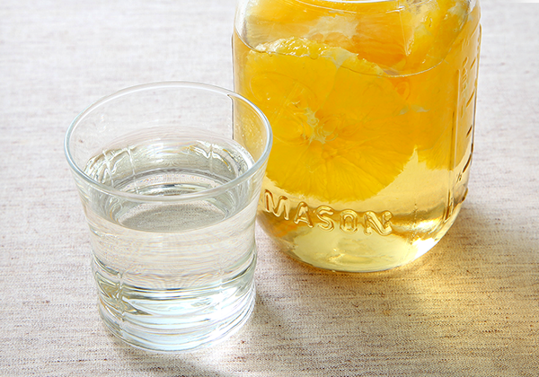

サワードリンク with オレンジ
オレンジのフルーツ酢

調理時間：10分、エネルギー：109kcal、塩分：0.0g
材料（8人分）
- オレンジ
- （皮を除いて）100g
- 氷砂糖
- 200g
- ミツカン 純リンゴ酢
- 200ml
- または
- ミツカン 穀物酢
- 200ml
作り方
- 1
- オレンジは洗って水けをふき、皮をむいて輪切りにする。
- 2
- 密封できる広口ビンにオレンジ、氷砂糖、リンゴ酢または穀物酢を入れ、ふたをして涼しいところに置く。
- 3
- 1日1回、ふたをしたまま軽くふり混ぜ、1週間で出来上がり。漬け終わった果実は取り除く。（お好みでお召し上がりください）
- 4
- 冷水または炭酸水で約５倍に薄めていただく。
※金属製のふたの使用は避けてください。
※出来上がったサワードリンクは冷蔵庫に保管し、一年以内をめどに早めにお召し上がりください。
※出来上がり量は約５倍に薄めて、約８杯分です。
※エネルギー、食塩相当量は1人分です。